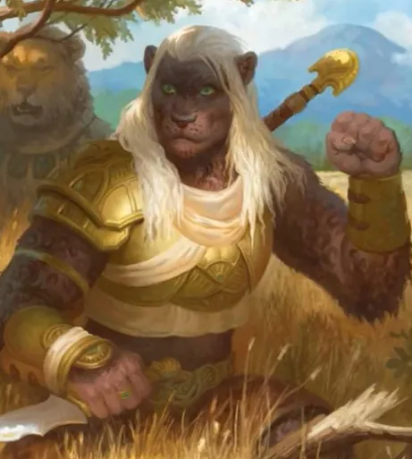

Playable Races > Leijon
Singular form, read "lee-yawn." Varied feline beastkin who come in many shapes and sizes. Their origin isn't certain, though some posit they descend from trickster demi-spirits that settled southern Karra and scattered across the world when the Trolls rose to power. Leijin of the north resemble domestic cats, while those of the south are bulky and leonine.
Cat's Feet: Leijin never take falling damage.
Dramatic: Leijin can feign death as an action, forcing foes to roll Judge at DC 10 + the Leijon's level.
Racials: +2 AGI -1 CON +4 Acrobacy +4 Escape +4 Sleight of Hand
Health: 1d7 health points per level.
Origin: Like all beastkin, they are nomadic.